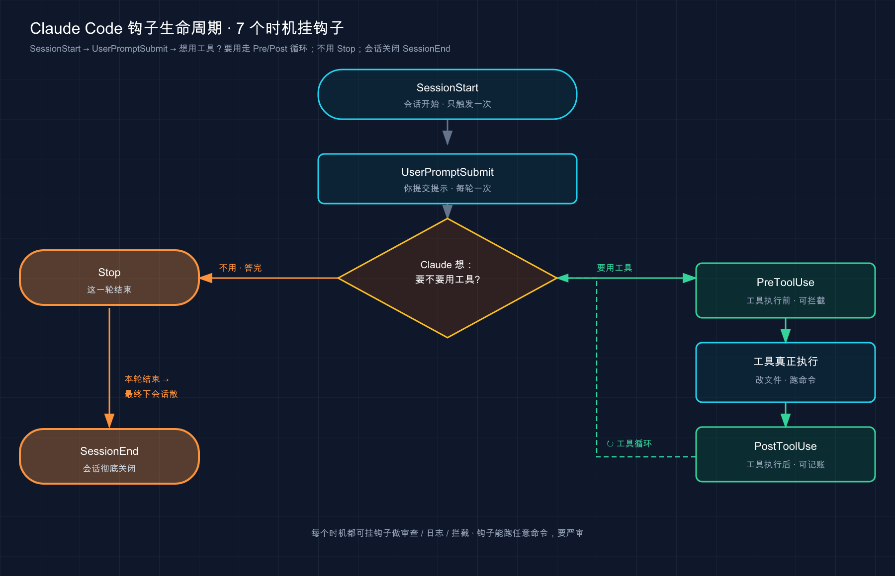

📚 系列导航：上一篇 32 输出样式（Output Styles） 教你怎么换一套「人格」让 Claude 用你想要的口吻干活。这一篇聊的是另一种「自动化」——不是改它怎么说话，而是在某个事件一发生的那一刻，雷打不动替你跑一段动作：改完文件自动格式化、危险命令直接拦死、它干完活给你发条通知。这就是钩子（Hooks）。
设想这样一个数字：某一周里，让 Claude 改完代码后，手动补敲 prettier --write 的次数，是 23 次。
23 次。同一个动作，机械地重复了 23 遍。更离谱的是中间还漏了两回——提交上去之后被 CI 的格式检查打回来，又得重新跑一遍流程。
这时候就该想一个事：这种「每次都得做、做的内容还一模一样」的动作，凭什么要靠人记着、靠 Claude 自觉？ 在 CLAUDE.md 里写过「改完文件记得跑 prettier」，可它三次里总有一次想不起来——因为那只是一句请求，不是保证。
而配一个钩子（Hook），一行配置，问题就彻底没了：从那以后，Claude 每编辑完一个文件，格式化就自动跑，再没手敲过一次 prettier，也再没被 CI 打回来过。这一篇，就把这个能「自动扣扳机」的东西，从是什么讲到怎么配、怎么调。
看完这一篇，你会拿到：
- 一句话讲明白 Hook 是什么、它跟「写进 CLAUDE.md 的请求」差在哪个根本点上
- Claude 干活的生命周期里，到底有哪些「时机」能挂钩子（
PreToolUse/PostToolUse/Stop/SessionStart等） - 钩子配在哪个文件、
matcher怎么把它收窄到「只在改文件时触发」 - 三个能直接抄走的真实例子：改完自动格式化、拦危险命令、干完发通知
- 钩子和 Claude 之间靠什么对话（stdin 的 JSON、退出码、stdout）——这是看懂一切的钥匙
- 钩子不触发、报错时，怎么一步步查出来
01 先搞懂：Hook 到底是什么、强在哪个「保证」上
先给结论：Hook 是「某个事件一发生，就自动执行的一段命令或请求」——它不靠 Claude 思考决定要不要做，触发是有保证的。（最常用的是 shell 命令，此外还支持 HTTP 端点、MCP 工具、LLM 提示等形式。）
官方的定义很干脆，先放这儿：
Hooks 是用户定义的 shell 命令，在 Claude Code 生命周期中的特定点执行。它们对 Claude Code 的行为提供确定性控制，确保某些操作始终发生，而不是依赖 LLM 选择运行它们。
注意里头两个词：「确定性控制」「始终发生」。这就是 Hook 的命门所在。
类比：家里贴的自动化规则（「当……就……」）。 你给智能家居设过那种规则吧——「当有人开门，就亮灯」「当我离家，就关掉所有插座」。条件一满足，动作必然发生，不需要谁记得。Hook 就是给 Claude Code 装的这种规则——你定义「当某个事件发生，就跑这段命令」，它自动执行，雷打不动。
这里要把一个最关键的区别钉死：写进 CLAUDE.md 的是「请求」——它大概率照办，但可能漏；配成 Hook 的是「保证」——只要那个事件触发，动作一定执行，跟 Claude 记不记得没半点关系。官方的话：
CLAUDE.md 或 skill 中的「永远不要编辑
.env」之类的说明是请求，而不是保证。阻止编辑的PreToolUsehook 是强制执行。
这就是开头那 23 次的根源：「改完跑 prettier」写在 CLAUDE.md 里是请求，三次漏一次；配成 Hook 是保证，一次不漏。
几个你大概率会遇到、值得「上保证」的场景，先感受一下：
- 「每次改完文件，自动格式化 / 跑 lint」——别再手敲，也别指望它自觉
- 「
rm -rf、删生产库这种命令，给我硬拦死」——要确定地拦住，不能靠提示 - 「它干完活、或者等我输入时，给我发条桌面通知」——你好切去干别的，不用盯着终端
💡 一句话总结：Hook 是「事件触发的自动动作」，核心价值是把「请求」变成「保证」——CLAUDE.md 拜托它做的事可能漏，Hook 挂上的事件一触发就必然执行。
02 有哪些「时机」能挂钩子：认识生命周期事件
Hook 不是随便什么时候都能挂，它得挂在 Claude 干活流程里特定的「时机」上。这些时机，官方叫事件（event）。想用好 Hook，第一步就是认清「我想让这事在什么时候发生」。
回想第 03 篇讲的「代理循环」——Claude 干活是「想 → 做 → 看」转圈。这些事件，正好散布在这个循环的前前后后。官方把它们按触发频率分成了三档，这个分法特别好记：
- 每个会话一次：
SessionStart（会话开始 / 恢复时）、SessionEnd（会话结束时） - 每一轮对话一次：
UserPromptSubmit（你刚提交提示、Claude 还没开始处理时）、Stop（Claude 答完这一轮时） - 代理循环里每次工具调用：
PreToolUse（某个工具就要执行前）、PostToolUse（某个工具成功执行后）
光说有点抽象，画张图你一眼就懂这几个最常用的事件卡在哪儿：

这张图把「想→做→看」的循环摊开了：一进会话是 SessionStart，你说话是 UserPromptSubmit，然后进入「要不要用工具」的循环——每次动工具，前面有 PreToolUse、后面有 PostToolUse，循环转完这一轮就是 Stop，整个会话收摊是 SessionEnd。你想让动作在哪一步发生，就挂对应的那个事件。
这六个是日常用得最多的。其实官方支持的事件有三十来个（比如压缩前后的 PreCompact/PostCompact、文件落盘变动的 FileChanged、配置被改的 ConfigChange、子代理起停的 SubagentStart/SubagentStop 等），但对小白来说，先把下面这四个吃透，能覆盖九成场景：
| 事件 | 什么时候触发 | 最典型的用法 |
|---|---|---|
PreToolUse |
某个工具执行前 | 拦危险命令、保护敏感文件（能阻止操作） |
PostToolUse |
某个工具成功执行后 | 改完文件自动格式化 / 跑 lint |
Stop |
Claude 答完这一轮 | 提醒「活还没干完，继续」、扫一遍工作区 |
SessionStart |
会话开始或恢复时 | 往上下文里注入项目状态（如最近的提交） |
记这张表有个窍门：看名字里的 Pre 和 Post——Pre 是「之前」，所以只有它能在动作发生前拦住；Post 是「之后」，工具都跑完了，它只能「事后补一刀」（格式化、记日志），拦不了。这个差别下一节细说。
💡 一句话总结：Hook 挂在 Claude 生命周期的特定事件上，按频率分三档（每会话 / 每轮 / 每次工具调用）；新手先吃透
PreToolUse（前，能拦）、PostToolUse（后，补刀）、Stop（答完）、SessionStart（开场）这四个就够用。
03 钩子配在哪、matcher 怎么把它收窄
知道了能挂哪些事件，来看怎么写。Hook 写在设置文件（settings.json）里——就是第 31 篇专门讲过的那套配置文件。写在哪个文件，决定了它管多大范围：
| 配在哪个文件 | 生效范围 | 能共享给团队吗 |
|---|---|---|
~/.claude/settings.json |
你所有项目 | 否，只在你这台机器 |
.claude/settings.json（项目根） |
仅当前项目 | 是，可以提交进 git |
.claude/settings.local.json（项目根） |
仅当前项目 | 否，被 gitignore |
这跟第 31 篇讲配置时的「项目档案柜 vs 工位抽屉」是同一套逻辑：全队都该有的 Hook（比如「改完一律格式化」）写进项目的 .claude/settings.json 提交进 git；只是你自己想要的（比如发通知到你的桌面）写进 ~/.claude/settings.json。
Hook 配置长什么样
先看一个最小的完整例子——「每次用 Edit 或 Write 改完文件，自动跑 prettier 格式化」，就是治好那 23 次毛病的那段。写进项目根目录的 .claude/settings.json：
{
"hooks": {
"PostToolUse": [
{
"matcher": "Edit|Write",
"hooks": [
{
"type": "command",
"command": "jq -r '.tool_input.file_path' | xargs npx prettier --write"
}
]
}
]
}
}
别被这层嵌套吓到，它就三层，对着拆一下你立刻懂：
"PostToolUse"——挂哪个事件（这里：工具执行后）。"matcher": "Edit|Write"——收窄到哪些工具才触发（这里：只在Edit或Write工具之后，不在Bash、Read之后）。- 里层的
hooks数组——真正要跑的动作："type": "command"表示跑一条 shell 命令，"command"就是那条命令。
这条命令里的 jq 是个解析 JSON 的小工具（Mac 用 brew install jq 装，Ubuntu 用 apt-get install jq）。它的作用下一节讲——简单说就是从 Claude 递来的数据里，把刚改的那个文件路径抠出来，喂给 prettier。
matcher：让钩子「只在该触发的时候触发」
matcher 是 Hook 配置里最该搞懂的一个字段。一句话：没有它，钩子会在那个事件的「每一次」都触发；有了它，你能把范围收窄。
类比：保安的进门规定——不是来送货的，不进大门。 没有 matcher 的钩子就像让保安「任何人来都登记」，效率很低；有了 matcher，就变成「只有快递员来才登记，其他人直接放行」。matcher 干的就是这个「划定触发范围」的活。
对工具类事件（PreToolUse/PostToolUse），matcher 匹配的是工具名。它的写法有三种，看这张表：
| 你写的 matcher | 含义 | 例子 |
|---|---|---|
"Edit|Write" |
精确匹配这几个工具（| 是「或」） |
只在 Edit 或 Write 之后触发 |
"Bash" |
精确匹配单个工具 | 只在跑 Bash 命令时触发 |
"" 或省略 |
匹配所有，每次都触发 | 该事件每次发生都跑 |
注意：matcher 区分大小写，写成 edit 是匹配不上 Edit 工具的——这是新手钩子不触发最常见的原因之一。
还有一点新手容易忽略：有些事件压根不支持 matcher（比如 UserPromptSubmit、Stop），因为它们没有「工具名」这种东西可筛，总是每次都触发。给这些事件加 matcher，会被静默忽略。
💡 一句话总结：Hook 写进
settings.json（全局放主目录、项目放.claude/），配置就三层——事件、matcher、动作；matcher负责把钩子收窄到「只在该触发的工具上触发」，且区分大小写。
04 钩子和 Claude 怎么对话：stdin、退出码、stdout
这一节是看懂一切的钥匙。前面那条 jq 命令为什么能拿到文件路径？钩子怎么「拦」住一条命令？答案全在这套「对话机制」里。
机制本身极简单，就三条管道：Claude 把事件数据从 stdin 喂给你的脚本 → 脚本干活 → 脚本用「退出码 + stdout」告诉 Claude 接下来怎么办。逐个拆。
输入：Claude 从 stdin 递给你一坨 JSON
事件一触发，Claude Code 会把这个事件的相关数据，作为一段 JSON 从标准输入（stdin）塞给你的命令。比如 Claude 要跑 Bash 命令时，PreToolUse 钩子收到的大概长这样：
{
"session_id": "abc123",
"cwd": "/Users/sarah/myproject",
"hook_event_name": "PreToolUse",
"tool_name": "Bash",
"tool_input": {
"command": "npm test"
}
}
看到了吧——Claude 要干什么、用哪个工具、参数是什么，全在里头。第 03 节那条 jq -r '.tool_input.file_path'，干的就是从这坨 JSON 里把 tool_input.file_path（要改的文件路径）抠出来。jq 就是专门解析 JSON 的工具，-r 是让它输出纯文本（不带引号）。
输出：用「退出码」告诉 Claude 下一步
脚本干完活，靠退出码（exit code）给 Claude 下指令。这是 Hook 最核心的约定，记住三个数就行：
| 退出码 | 含义 | 效果 |
|---|---|---|
0 |
没意见，正常走 | 操作继续（PreToolUse 时不等于批准，照常走权限流程） |
2 |
拦住！ | 操作被阻止；你写到 stderr 的内容会作为反馈递给 Claude，让它调整 |
| 其他（如 1） | 出错了，但不拦 | 操作继续，终端显示一条 hook 报错提示 |
重点是 exit 2——这是钩子「踩刹车」的唯一方式。注意一个反直觉的坑：
对于大多数 hook 事件，仅退出代码 2 阻止操作。Claude Code 将退出代码 1 视为非阻止错误并继续操作，尽管 1 是传统的 Unix 失败代码。如果您的 hook 旨在强制执行策略，请使用
exit 2。
翻成人话：想拦操作，必须 exit 2，不是 exit 1。很多人按 Unix 习惯写了 exit 1，结果钩子「报了错但没拦住」，命令照样跑了。这是第一次写拦截钩子时最容易栽的跟头——脚本明明判断出了危险命令、也打印了警告，但因为顺手写成 exit 1，Claude 该跑还是跑了，吓人一身汗。
还有个细节关系到「能不能拦住」：只有 Pre 类事件能真正拦操作。PostToolUse 收到 exit 2 也拦不住——因为工具已经跑完了，木已成舟，它只能把 stderr 显示给 Claude 看。这就呼应了上一节那句「Pre 能拦、Post 只能补刀」。
进阶：用 stdout 返回 JSON，做更细的控制
退出码只能「拦 / 不拦」两档。想要更细的控制（比如拦的同时告诉 Claude 具体原因、或往它上下文里注入一段信息），就改成 exit 0 然后往 stdout 打印一段 JSON。
用退出码 2 配 stderr 来「阻止」，或用 JSON 配退出码 0 来做「结构化控制」。两者不要混用：你退出 2 时，Claude Code 会忽略 JSON。
举两个最常见的 JSON 输出：
① PreToolUse 想拦截、并说明理由——用 permissionDecision：
{
"hookSpecificOutput": {
"hookEventName": "PreToolUse",
"permissionDecision": "deny",
"permissionDecisionReason": "这条命令会动生产库，禁止执行"
}
}
permissionDecision 有四个值："deny"（拦掉，把理由发给 Claude）、"ask"（照常弹权限框问你）、"allow"（跳过权限框直接放行）、"defer"（延迟执行，让工具稍后恢复，适合非交互模式下的异步审批场景）。
这里有条安全红线必须讲清楚，呼应第 20、21 篇的权限与安全：钩子返回 "allow"，不能绕过你设置里的拒绝规则。官方原话——
返回
"allow"跳过交互式提示但不覆盖权限规则。如果拒绝规则与工具调用匹配，即使你的 hook 返回"allow"，调用也会被阻止。
也就是说：Hook 只能「收紧」限制，不能「放松」到超过权限规则允许的范围。这是个很重要的安全设计——它保证了恶意钩子没法靠返回 allow 把你的安全护栏拆了。反过来，PreToolUse 钩子的拦截优先级极高：哪怕你开了 --dangerously-skip-permissions（跳过所有权限），一个返回 deny 的钩子照样能拦住。所以拿 Hook 来强制团队红线，是真·拦得死。
② SessionStart 想往上下文里塞点信息——直接往 stdout 打印文本就行（这几个事件特殊，stdout 会被当成上下文喂给 Claude）。比如会话一开就把最近 5 条提交告诉它：
{
"hooks": {
"SessionStart": [
{
"hooks": [
{
"type": "command",
"command": "git log --oneline -5"
}
]
}
]
}
}
💡 一句话总结：钩子和 Claude 靠三条管道对话——stdin 喂 JSON 进来、退出码下指令、stdout 做精细控制；记死「
exit 2才拦得住（不是 1）」「退出码和 JSON 别混用」「Hook 只能收紧、不能放松权限」这三条，就抓住了七成。
05 三个能直接抄走的真实例子
理论够了，上三个常用、你也能直接抄的钩子。每个都标清楚「挂哪个事件、收窄到哪、配在哪个文件」。
例子一：改完文件自动格式化（PostToolUse）
就是治好那 23 次毛病的那个，最实用、零风险，强烈建议每个项目都配上。写进项目根的 .claude/settings.json：
{
"hooks": {
"PostToolUse": [
{
"matcher": "Edit|Write",
"hooks": [
{
"type": "command",
"command": "jq -r '.tool_input.file_path' | xargs npx prettier --write"
}
]
}
]
}
}
逻辑：Claude 每次用 Edit/Write 改完文件 → 钩子从 stdin 的 JSON 里抠出文件路径 → 丢给 prettier --write 格式化。从此格式永远统一，不用你操心。把 prettier 换成 eslint --fix、gofmt、black 都是一个套路。
例子二：拦掉危险命令（PreToolUse + 脚本）
这个用上了「exit 2 拦截」。命令复杂时，把逻辑写进一个单独的脚本比硬塞进 JSON 清爽得多。
第一步，把脚本存到 .claude/hooks/block-dangerous.sh：
#!/bin/bash
# block-dangerous.sh：拦截 rm -rf 这类危险命令
INPUT=$(cat)
COMMAND=$(echo "$INPUT" | jq -r '.tool_input.command')
if echo "$COMMAND" | grep -q "rm -rf"; then
echo "Blocked: 检测到 rm -rf，已拦截" >&2 # 写到 stderr，会反馈给 Claude
exit 2 # exit 2 = 阻止这次工具调用
fi
exit 0 # 其余命令放行，走正常权限流程
第二步，给脚本加可执行权限（Mac/Linux 必须，否则 Claude 跑不了它）：
chmod +x .claude/hooks/block-dangerous.sh
第三步，在 .claude/settings.json 里注册它，挂到 Bash 工具的 PreToolUse 上：
{
"hooks": {
"PreToolUse": [
{
"matcher": "Bash",
"hooks": [
{
"type": "command",
"command": "\"$CLAUDE_PROJECT_DIR\"/.claude/hooks/block-dangerous.sh"
}
]
}
]
}
}
这里那个 $CLAUDE_PROJECT_DIR 是 Claude Code 提供的环境变量，指向项目根目录——用它拼路径，钩子不管在哪个子目录跑都能找到脚本，比写死的相对路径稳。
⚠️ 这一节回到第 21 篇的安全主线：钩子是用你的完整用户权限跑的 shell，能删你能删的任何文件。官方反复强调，加任何钩子前先审一遍它的命令，尤其别从来路不明的地方抄整段脚本就往设置里塞。
例子三：它需要你输入时，发条桌面通知（Notification）
Claude 干到一半要你批准、或者答完等你下一句时，你可能早切去刷别的了。挂个通知钩子，它就主动喊你。这个用 Notification 事件（Claude 发通知时触发）。
macOS 写进 ~/.claude/settings.json（这种「叫我」的钩子是你个人偏好，放全局）：
{
"hooks": {
"Notification": [
{
"matcher": "",
"hooks": [
{
"type": "command",
"command": "osascript -e 'display notification \"Claude Code 在等你\" with title \"Claude Code\"'"
}
]
}
]
}
}
平台差异（官方给的原生命令，照抄即可）：
| 平台 | 通知命令（填进 command） |
|---|---|
| macOS | osascript -e 'display notification "..." with title "Claude Code"' |
| Linux | notify-send 'Claude Code' '...' |
| Windows | 用 PowerShell 的 MessageBox（官方文档有完整片段） |
macOS 上如果通知没弹出来，多半是 Script Editor 没拿到通知权限——去「系统设置 → 通知」里找到 Script Editor 把开关打开。第一次配很容易死活没声响，折腾半天才发现是这个权限没给。
💡 一句话总结：三个钩子按风险递增——格式化（
PostToolUse，零风险，建议人人配）、拦命令（PreToolUse+脚本，记得chmod +x和exit 2）、发通知（Notification，平台命令不同）；脚本路径用$CLAUDE_PROJECT_DIR拼最稳。
06 动手：5 分钟配一个钩子并亲眼看它触发
光看不练记不住。下面带你配一个最安全、最容易看到效果的钩子——每次 Claude 跑完 Bash 命令，就把这条命令记进一个日志文件。全程不动你任何代码，纯加一段配置，跑完能亲眼验证。
这个练习用到 jq。没装的话：Mac 跑 brew install jq，Ubuntu 跑 sudo apt-get install jq。装不装得上不需要魔法上网。
第一步：找一个练手目录，打开它的项目设置文件
随便找个空目录（别在重要项目里练），在里头建 .claude/settings.json。如果文件已存在且有别的内容，把 hooks 这块作为新键加进去，别整个覆盖。文件内容：
{
"hooks": {
"PostToolUse": [
{
"matcher": "Bash",
"hooks": [
{
"type": "command",
"command": "jq -r '.tool_input.command' >> ~/claude-bash-log.txt"
}
]
}
]
}
}
这条钩子：每次 Bash 工具跑完（PostToolUse + matcher: "Bash"）→ 从 stdin 的 JSON 里抠出命令 → 用 >> 追加写进主目录的 claude-bash-log.txt。
第二步：在这个目录里启动 Claude，确认钩子已注册
claude
进去后输入 /hooks：
/hooks
预期：弹出一个只读的钩子浏览器，列出所有事件。找到 PostToolUse，旁边应该显示有 1 个钩子。选中它能看到详情：事件、matcher（Bash）、来源文件（Project，即项目的 .claude/settings.json）、还有那条命令。看到它在列表里 = 钩子注册成功了。
/hooks 菜单是只读的——它只能让你查、不能加和改。要改钩子，直接编辑 settings.json，或者直接让 Claude 帮你改。
第三步：让 Claude 跑条 Bash 命令，触发钩子
按 Esc 回到对话，让它跑个无害的命令：
帮我用 ls 看一下当前目录有哪些文件
它会调用 Bash 工具跑 ls。这一跑，PostToolUse 钩子就该触发了。（钩子成功执行时是「静默」的，终端不会特意提示——这是正常的。）
第四步：验证钩子真跑了——查日志文件
新开一个终端，看日志：
cat ~/claude-bash-log.txt
预期：文件里出现了刚才那条 ls 命令（以及这个会话里 Claude 跑过的其他 Bash 命令）。看到命令被记下来了 = 钩子真的在每次 Bash 后自动触发了，你这条「自动化规则」立起来了。
第五步：清理（可选）
练完拆掉很简单——把 .claude/settings.json 里那段 hooks 删掉就行（钩子没有单独的「删除命令」，从配置里移除条目即可）。日志文件 rm ~/claude-bash-log.txt 删掉。
跑通这五步，你就把「写配置 → /hooks 确认注册 → 触发事件 → 验证副作用」这条完整链路亲手走了一遍。以后配任何钩子，本质都是这套流程，无非换个事件、换个 matcher、换条命令。
💡 一句话总结：练手就配「记录 Bash 命令」这种零风险钩子最稳——写进
.claude/settings.json、用/hooks看它注册、让 Claude 跑命令触发、查日志文件验证；亲眼看到副作用发生，比记十条定义都顶用。
07 钩子不触发 / 报错了，怎么查
Hook 配好了不灵，是新手最常见的卡点。别瞎猜，按下面这个顺序查，基本都能定位。我把官方的排查清单整理成了「症状 → 怎么查」：
| 症状 | 最可能的原因 / 怎么查 |
|---|---|
| 钩子压根不触发 | ① 跑 /hooks 看它到底注册了没；② matcher 区分大小写，edit 匹配不上 Edit；③ 事件挂错了（想拦操作要用 PreToolUse，不是 PostToolUse） |
/hooks 里根本没有我配的钩子 |
① JSON 格式错了（JSON 不允许尾逗号、不允许注释）；② 文件位置错了（项目钩子在 .claude/settings.json，全局在 ~/.claude/settings.json）；③ 改完没生效就重启一次会话 |
终端报 hook error |
脚本意外非零退出。手动测一下（见下方命令）；报 command not found 多半是脚本路径不对，用绝对路径或 $CLAUDE_PROJECT_DIR；报 jq: command not found 就是没装 jq |
| 脚本没跑起来 | Mac/Linux 上脚本忘了加可执行权限，补 chmod +x |
| 想拦却没拦住 | 八成是写了 exit 1，改成 exit 2（见第 04 节那个坑） |
两个最实用的排查手段单独拎出来：
① 手动喂假数据测脚本。不用真在 Claude 里触发，自己造一段 JSON 管道喂给脚本，看它退出码对不对：
echo '{"tool_name":"Bash","tool_input":{"command":"rm -rf /tmp/x"}}' | ./block-dangerous.sh
echo $? # 看退出码：拦截脚本这里应该输出 2
这是调拦截钩子的标准动作——先把脚本单独喂熟了，再挂到 Claude 上，省得在真实会话里反复试。
② 开调试日志看细节。想看「到底哪些钩子匹配了、退出码多少、stdout/stderr 是啥」，用 --debug 启动，日志会写进 ~/.claude/debug/<会话id>.txt：
claude --debug
或者会话里直接敲 /debug 也能开。日志里会有类似这样的行，一眼看出钩子有没有跑、跑成啥样：
[DEBUG] Executing hooks for PostToolUse:Bash
[DEBUG] Hook command completed with status 0
还有个一键开关值得知道：想临时关掉所有钩子（比如怀疑某个钩子在捣乱），在设置文件里加一句 "disableAllHooks": true 就行，不用一个个删。
💡 一句话总结：钩子不灵别瞎猜，按「
/hooks看注册 → 查 matcher 大小写和事件选对没 → 手动喂 JSON 测脚本 →--debug看日志」的顺序查；想拦没拦住先看是不是写了exit 1。
08 小结
这一篇我们把 Hook 从「是什么」一路讲到「怎么配、怎么调」——它是给 Claude Code 装的「自动化规则」：某个事件一触发，就雷打不动替你跑一段动作。
把核心串起来回顾：
| 你想干的事 | 怎么落地 | 关键点 |
|---|---|---|
| 理解 Hook 是什么 | 事件触发的自动 shell 命令 | 把「请求」变成「保证」，不靠 Claude 自觉 |
| 选对挂载时机 | 认生命周期事件 | Pre 能拦、Post 补刀、Stop 答完、SessionStart 开场 |
| 写一个钩子 | 配进 settings.json |
三层：事件 + matcher（区分大小写）+ 动作 |
| 让钩子和 Claude 对话 | stdin / 退出码 / stdout | exit 2 才拦得住，退出码和 JSON 别混用 |
| 拦危险操作 | PreToolUse + 脚本 |
记得 chmod +x，Hook 只能收紧不能放松权限 |
| 钩子不灵了 | 按顺序排查 | /hooks 看注册、手动喂 JSON 测、--debug 看日志 |
你现在应该能： 说清 Hook 和「写进 CLAUDE.md 的请求」差在哪个根本点（保证 vs 请求）；知道 PreToolUse/PostToolUse/Stop/SessionStart 各自挂在 Claude 干活流程的哪一步；照着模板往 settings.json 里写一个带 matcher 的钩子；看懂钩子靠 stdin/退出码/stdout 跟 Claude 对话，并记死「exit 2 才能拦」；钩子不触发时知道从 /hooks 和 --debug 入手查。开头那 23 次手敲 prettier 的苦差，到这儿你已经有能力用一行配置永久解决了。
Hook 是「系统配置与优化」这一组里很硬核的一块——它让你对 Claude 的行为有了确定性的掌控，而不只是「拜托它」。
下一篇 34「CLI 参考手册：命令与全部标志」——这一路你敲了不少 claude 开头的命令、用了 --debug、--dangerously-skip-permissions 这些标志，但它们其实只是冰山一角。下一篇把 claude 命令行的全部命令和标志系统梳一遍，当成一本随手能翻的「字典」。想想看：你现在能脱口而出的 claude 标志有几个？翻完那篇，你会发现自己之前至少漏用了一半能省事的开关。